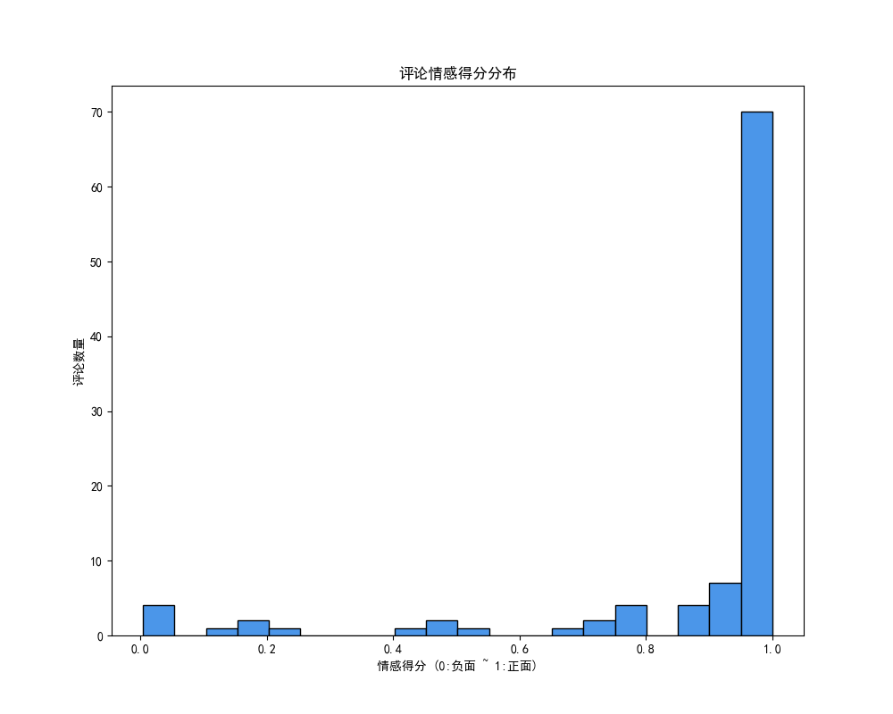

假设你是某影视平台数据分析师，需分析《哪吒之魔童闹海》的票房火爆原因：观众喜欢什么？吐槽什么？答案需来自真实影评数据，而非主观猜测。本案例将通过中文分词、关键词提取、词云生成、情感分析等技术，挖掘影评中的核心信息。
Python环境、第三方库：jieba、wordcloud、snownlp、matplotlib。
安装命令（清华镜像源）：
pip install jieba wordcloud snownlp matplotlib -i https://pypi.tuna.tsinghua.edu.cn/simple中文无天然空格分隔，需通过工具分词。Python中常用工具：jieba（最常用）、SnowNLP、HanLP等。jieba支持多种分词模式，允许自定义词典。
# jieba不同模式分词对比
import jieba
sentence = "我是中国传媒大学的一名学生"
# 1. 精确模式（默认，无冗余，适合分析）
seglist_precise = jieba.lcut(sentence)
print("精确模式：", seglist_precise) # 输出：['我', '是', '中国', '传媒大学', '的', '一名', '学生']
# 6. 全模式（扫描所有可能词，有冗余，速度快）
seglist_all = jieba.lcut(sentence, cut_all=True)
print("全模式：", seglist_all) # 输出：['我', '是', '中国', '中国传媒', '传媒', '传媒大学', '大学', ...]
# 3. 搜索引擎模式（精确模式基础上切分长词，适合索引）
seglist_search = jieba.lcut_for_search(sentence)
print("搜索引擎模式：", seglist_search) # 输出：['我', '是', '中国', '传媒', '大学', '传媒大学', ...]jieba默认词典可能无法识别专有名词（如“中国传媒大学”），需手动添加新词或加载自定义词典。
# 动态添加新词
import jieba
sentence = "我是中国传媒大学的一名学生"
# 动态添加新词（单次生效）
jieba.add_word("中国传媒大学")
seglist = jieba.lcut(sentence)
print("添加新词后：", seglist) # 输出：['我', '是', '中国传媒大学', '的', '一名', '学生']
# 加载自定义词典（长期生效，词典格式：词语 词频 词性）
# jieba.load_userdict("custom_dict.txt") # custom_dict.txt中一行：中国传媒大学 5 n关键词提取用于捕捉文本核心信息，jieba提供两种算法：TF-IDF（词频-逆文档频率）和TextRank（基于图的排序）。
衡量词在文档中的重要性：词频（TF）越高、在其他文档中出现越少（IDF越高），关键词权重越高。
#基于TF-IDF提取关键词
import jieba.analyse
# 读取二十大报告文本（假设report20CH.txt在data目录）
with open("data/report20CH.txt", 'r', encoding='utf-8') as f:
content = f.read()
# 提取前10个关键词（withWeight=True返回权重）
keywords_tfidf = jieba.analyse.extract_tags(
content,
topK=10, # 返回前10个关键词
withWeight=True # 同时返回权重
)
print("TF-IDF关键词及权重：")
for word, weight in keywords_tfidf:
print(f"{word} {weight:.6f}")将词视为图节点，共现关系视为边，通过迭代计算节点权重，适合长文本关键词提取。
修改上面代码，用TextRank算法提取前10个关键词
# 基于TextRank提取关键词
keywords_textrank = jieba.analyse.textrank(
content,
topK=10,
withWeight=True
)
print("\nTextRank关键词及权重：")
for word, weight in keywords_textrank:
print(f"{word} {weight:.6f}")词云图（Word Cloud）是一种数据可视化技术，用于展示文本数据中词汇的重要性和频率。词云图将词汇按照出现的频率进行排列，并根据频率调整字体大小、颜色和位置，从而生成一个视觉上类似云彩的图形。词云图中词的大小、颜色反映其在文本中的频率或重要性。词云图中字体较大的词在文本中出现的次数较多或较为重要。通过词云图读者能够迅速识别文本中的热点词汇或主题，有利于文本重点内容了解。
Python中用于制作词云图的库有wordcloud和pyecharts等第三方库。下面介绍利用wordcloud制用词云图。
wordcloud库通过pip命令安装，具体命令如下：
pip install wordcloud利用wordcloud制作词云图的基本步骤如下：
通过import语句引入库，代码如下：
import wordcloud
创建WordCloud类的实例，代码如下：
w=wordcloud.WordCloud()
常用参数如表6-1所示。
表6-1 WordCloud()方法常用参数
| 参数 | 描述 |
|---|---|
| width | 指定词云图的宽度,默认400像素 |
| height | 指定词云图的高度,默认200像素 |
| background_color | 指定词云图的背景颜色，默认为黑色 |
| min_font_size | 指定词云图中显示的最小字号，默认4号 |
| max_font_size | 指定词云图中显示的最大字号 |
| font_step | 指定词云图中字体字号的步进间隔，默认为1 |
| font_path | 指定字体路径，默认为None |
| max_words | 指定词云图显示的最大单词数量,默认为200 |
| stop_words | 指定要过滤的停用词，停用词可以是集合（Set） 或列表（List）或元组（tuple）形式 |
| mask | 指定词云形状，其值为图像文件对应的数组，mask图像中有颜色的地方会被填上词。如果指定了mask，词云大小为mask图像大小，词云对象的width、height属性被忽略 |
使用generate()方法加载文本，代码如下：
w.generate(txt)
其中参数txt必须为以空格分隔的字符串，若生成中文词云图，则需要先将生成词云的中文字符串进行分词然后组成以空格分隔的词的字符串。
通过to_file()方法保存词云图，代码如下：
w.to_file(filename)
wordcloud库默认使用的是西文字体，要想正常显示中文，需要指定font_path参数， font_path="字体文件的路径"， 如：font_path="simhei.ttf"。字体可以使用系统已安装的TrueType 字体（.ttf 格式）或 OpenType 字体（.otf 格式）也可使用自定义字体。系统已经安装的字体，通常在操作系统的字体目录下：
wordcloud库默认是以空格作为分隔符识别词，然后生成词云图，因为中文的词不是以空格分隔的，所以在制作中文词云图之前一定要先分词，然后将分好的词拼接成以空格分隔的字符串。如：
words=" ".join(jieba.lcut(txt))#中文词云图
import wordcloud
import matplotlib.pyplot as plt
import jieba
txt = "五年来，我们坚持加强党的全面领导和党中央集中统一领导，全力推进全面建成小康社会进程..."
# 1. 中文分词（过滤停用词）
stopwords = {'和', '、', '，', '。', '的'} # 自定义停用词
words = jieba.lcut(txt)
words_filtered = [word for word in words if word not in stopwords]
words_str = ' '.join(words_filtered) # 转为空格分隔字符串（wordcloud要求）
# 2. 读取词云形状（可选）
mask = plt.imread('image/heart.jpg') # 心形图片
# 3. 创建词云（指定中文字体，Windows字体路径：C:\Windows\Fonts\simhei.ttf）
w = wordcloud.WordCloud(
font_path='simhei.ttf', # 中文字体路径
mask=mask, # 词云形状
background_color='white',
stopwords=stopwords,
max_words=200
)
# 4. 生成并显示词云
w.generate(words_str)
plt.imshow(w, interpolation='bilinear')
plt.axis('off') # 关闭坐标轴
plt.title('中文词云图')
plt.savefig('temp/chinese_wordcloud.png')
plt.show()图6-1 词云图
自然语言情感分析，也称意见挖掘，是自然语言处理领域的一个重要任务。它的核心是分析文本中所表达的情感倾向。情感分析在很多场景都有应用，像社交媒体舆情监测、产品评价分析、客户服务反馈分析等。通过情感分析，能够了解大众对特定话题、产品或者事件的态度和感受。Python中用于中文情感分析的库有：SnowNLP、NLTK、spaCy、Transformer等。 这里介绍一下 SnowNLP库进行情感分析的方法。SnowNLP 是一个专门为中文文本处理而设计的 Python 库，它可以实现包括分词、词性标注、情感分析等在内的多种自然语言处理任务。
# SnowNLP情感分析
from snownlp import SnowNLP
# 待分析文本
text_pos = "这部电影太棒了，剧情精彩，演员演技也很好！" # 积极文本
text_neg = "这部电影很无聊，剧情拖沓，不推荐观看。" # 消极文本
# 积极文本分析
s_pos = SnowNLP(text_pos)
print("积极文本得分：", s_pos.sentiments) # 输出：~0.999（接近1，积极）
print("情感倾向：", "积极" if s_pos.sentiments > 0.5 else "消极")
# 消极文本分析
s_neg = SnowNLP(text_neg)
print("消极文本得分：", s_neg.sentiments) # 输出：~0.001（接近0，消极）
print("情感倾向：", "积极" if s_neg.sentiments > 0.5 else "消极")注意：SnowNLP基于通用数据训练，特定领域（如专业影评）需使用领域适配模型（如BERT预训练模型）。
import pandas as pd
import jieba
import jieba.analyse
from collections import Counter
from wordcloud import WordCloud
from snownlp import SnowNLP
import matplotlib.pyplot as plt
# ---------------------- 1. 数据准备 ----------------------
# 读取爬取的影评数据（nezha_comments.csv）
df = pd.read_csv(r'data/nezha_comments.csv', encoding='utf-8')
# ---------------------- 2. 数据清洗 ----------------------
# 删除重复值
df.drop_duplicates(inplace=True)
# 处理“无评分”（设为5分）
df["评分"] = df["评分"].replace("无评分", 5).astype(int)
# ---------------------- 3. 中文分词 ----------------------
# 合并所有评论内容
comments = df["评论内容"].str.cat(sep=" ")
# 动态添加专有名词（如电影台词）
jieba.add_word("我命由我不由天")
# 分词
cut_comments = jieba.lcut(comments)
# ---------------------- 4. 词频统计 ----------------------
word_counts = Counter(cut_comments)
# 查看词频前10（含停用词，需后续过滤）
print("词频前10（含停用词）：")
print(word_counts.most_common(10)) # 输出：[('，', 610), ('的', 463), ..., ('哪吒', 72)]
# ---------------------- 5. 关键词提取（TF-IDF） ----------------------
keywords_10 = jieba.analyse.extract_tags(comments, topK=10)
print("\nTF-IDF关键词前10：")
print(keywords_10) # 输出：['哪吒', '电影', '陈塘关', '剧情', '申公豹', ...]
# ---------------------- 6. 词云生成 ----------------------
# 读取停用词表（cn_stopwords.txt）
with open(r'data/cn_stopwords.txt', 'r', encoding='utf-8') as f:
stopwords = set(f.read().split())
# 过滤停用词
words_filtered = [word for word in cut_comments if word not in stopwords and len(word) > 1]
words_str = ' '.join(words_filtered)
# 读取词云形状（心形）
mask = plt.imread(r'images/heart.jpg')
# 创建词云
wc = WordCloud(
font_path='simhei.ttf',
background_color='white',
mask=mask,
stopwords=stopwords,
max_words=200
)
wc.generate(words_str)
# 显示并保存
plt.figure(figsize=(10, 8))
plt.rcParams['font.sans-serif'] = ['SimHei'] # 解决中文显示
plt.imshow(wc, interpolation='bilinear')
plt.axis('off')
plt.title('《哪吒之魔童闹海》影评词云图')
plt.savefig('temp/nezha_wordcloud.png')
plt.show()
# ---------------------- 7. 情感分析 ----------------------
# 定义情感分析函数
def get_sentiment(text):
return SnowNLP(text).sentiments # 返回0-1得分
# 为每条评论添加情感得分
df['情感倾向'] = df['评论内容'].apply(get_sentiment)
# 可视化情感分布
plt.figure(figsize=(10, 6))
plt.hist(
df['情感倾向'],
bins=20, # 分20组
color='#4B96E9', # 蓝色
edgecolor='black'
)
plt.title('影评情感得分分布')
plt.xlabel('情感得分（0：负面 ~ 1：正面）')
plt.ylabel('评论数量')
plt.savefig('temp/nezha_sentiment.png')
plt.show()词云结果如图6-2所示：
词云图中“哪吒”、“申公豹”等词体现了观众对角色塑造的关注，“喜欢” 展现了观众的情感倾向，“剧情”反映出观众对故事呈现方式的讨论，“特效” 、“动画”等词体现了观众对视觉呈现的关注，“反抗”、“内核”、“中国故事”折射出观众对文化内涵的讨论。
整体而言，词云图既揭示了观众对电影的叙事方式 、视觉效果、角色塑造的高度关注，也反映出观众对优质内容以及能引发文化共鸣作品的需求与认可。
图6-2 《哪吒之魔童闹海》影评词云图
评论情感得分分布如图6-3所示：

图6-3 影评情感得分分布（集中在0.8-1，整体积极）
可见，情感倾向主要集中在0.8-1之间，说明观众普遍认为电影制作精良，值得一看。
案例收获：
拓展思考：